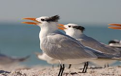
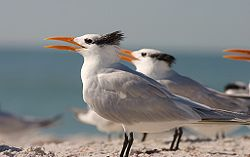

| Royal Tern | |
|---|---|
|  | |
| Conservation status | |
| Binomial name | |
| Thalasseus maximus (Boddaert, 1783) |
|
| Synonyms | |
|
Sterna maxima Boddaert, 1783 |
| Royal Tern | |
|---|---|
|  | |
| Conservation status | |
| Binomial name | |
| Thalasseus maximus (Boddaert, 1783) |
|
| Synonyms | |
|
Sterna maxima Boddaert, 1783 |
The Royal Tern (Thalasseus maximus, syn. Sterna maxima - see Bridge et al., 2005) is a seabird in the tern family Sternidae. This bird has two distinctive subspecies.
T. m. maximus breeds on the Atlantic and Pacific coasts of the southern USA and Mexico into the Caribbean. The slightly smaller T. m. albididorsalis breeds in coastal west Africa.
American birds winter south to Peru and Argentina, and African breeders move both north and south from the breeding colonies.
African birds may reach as far north as Spain. This species has also wandered to western Europe as a rare vagrant, these records probably being from the American colonies.
This species breeds in colonies on coasts and islands. It nests in a ground scrape and lays one or two eggs. Like all white terns, it is fiercely defensive of its nest and young.
Royal Tern feeds by plunge-diving for fish, usually from saline environments, like most Sterna terns. It usually dives directly, and not from the "stepped-hover" favoured by Arctic Tern. The offering of fish by the male to the female is part of the courtship display.
This is a large tern, second only to Caspian Tern but is unlikely to be confused with that carrot-billed giant, which has extensive dark underwing patches. Royal Tern has a long yellow bill, pale grey upperparts and white underparts. Its legs are black. In winter, the black cap becomes patchy. Juvenile Royal Terns have a scaly-backed appearance. The call is a characteristic loud grating noise like a Sandwich Tern.
In various parts of its range, Royal could be confused with Elegant Tern, Great Crested Tern and Lesser Crested Tern (see also Orange-billed tern). It is paler above than Lesser Crested Tern and the yellow-billed Great Crested Tern. Elegant Tern has a longer more curved bill and shows more white on the forehead in winter.
The appearance of apparent Elegant Terns in European waters means that records of Royal and Elegant Terns will need to be re-evaluated, since the latter species was thought an improbable migrant to the area.
The Royal Tern is one of the species to which the Agreement on the Conservation of African-Eurasian Migratory Waterbirds (AEWA) applies.

{kind=link}
{kind=link}